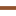

<!DOCTYPE html>
<html lang="en">
  <head>
    <meta charset="utf-8" />
    <meta http-equiv="X-UA-Compatible" content="IE=edge" />
    <meta name="viewport" content="initial-scale=1,user-scalable=no,maximum-scale=1,width=device-width" />
    <meta name="mobile-web-app-capable" content="yes" />
    <meta name="apple-mobile-web-app-capable" content="yes" />
    <link rel="stylesheet" href="css/leaflet.css" />
    <link rel="stylesheet" href="css/L.Control.Locate.min.css" />
    <link rel="stylesheet" href="css/qgis2web.css" />
    <link rel="stylesheet" href="css/fontawesome-all.min.css" />
    <link rel="stylesheet" href="css/leaflet-search.css" />
    <link rel="stylesheet" href="css/leaflet-control-geocoder.Geocoder.css" />
    <link rel="stylesheet" href="css/leaflet-measure.css" />
    <style>
      #map {
        width: 1300px;
        height: 800px;
      }
    </style>
    <title></title>
  </head>
  <body>
    <div id="map"></div>
    <script src="js/qgis2web_expressions.js"></script>
    <script src="js/leaflet.js"></script>
    <script src="js/L.Control.Locate.min.js"></script>
    <script src="js/leaflet.rotatedMarker.js"></script>
    <script src="js/leaflet.pattern.js"></script>
    <script src="js/leaflet-hash.js"></script>
    <script src="js/Autolinker.min.js"></script>
    <script src="js/rbush.min.js"></script>
    <script src="js/labelgun.min.js"></script>
    <script src="js/labels.js"></script>
    <script src="js/leaflet-control-geocoder.Geocoder.js"></script>
    <script src="js/leaflet-measure.js"></script>
    <script src="js/leaflet-search.js"></script>
    <script src="data/PENDIDIKAN_PT_50K_1.js"></script>
    <script src="data/ADMINISTRASI_LN_50K_2.js"></script>
    <script>
      var highlightLayer;
      function highlightFeature(e) {
        highlightLayer = e.target;

        if (e.target.feature.geometry.type === "LineString") {
          highlightLayer.setStyle({
            color: "#ffff00",
          });
        } else {
          highlightLayer.setStyle({
            fillColor: "#ffff00",
            fillOpacity: 1,
          });
        }
      }
      var map = L.map("map", {
        zoomControl: true,
        maxZoom: 28,
        minZoom: 1,
      }).fitBounds([
        [-5.410420706947476, 105.19467269053618],
        [-5.146355154458527, 105.46721665994205],
      ]);
      var hash = new L.Hash(map);
      map.attributionControl.setPrefix(
        '<a href="https://github.com/tomchadwin/qgis2web" target="_blank">qgis2web</a> &middot; <a href="https://leafletjs.com" title="A JS library for interactive maps">Leaflet</a> &middot; <a href="https://qgis.org">QGIS</a>'
      );
      var autolinker = new Autolinker({ truncate: { length: 30, location: "smart" } });
      L.control.locate({ locateOptions: { maxZoom: 19 } }).addTo(map);
      var measureControl = new L.Control.Measure({
        position: "topleft",
        primaryLengthUnit: "meters",
        secondaryLengthUnit: "kilometers",
        primaryAreaUnit: "sqmeters",
        secondaryAreaUnit: "hectares",
      });
      measureControl.addTo(map);
      document.getElementsByClassName("leaflet-control-measure-toggle")[0].innerHTML = "";
      document.getElementsByClassName("leaflet-control-measure-toggle")[0].className += " fas fa-ruler";
      var bounds_group = new L.featureGroup([]);
      function setBounds() {}
      map.createPane("pane_GoogleMaps_0");
      map.getPane("pane_GoogleMaps_0").style.zIndex = 400;
      var layer_GoogleMaps_0 = L.tileLayer("https://mt1.google.com/vt/lyrs=m&x={x}&y={y}&z={z}", {
        pane: "pane_GoogleMaps_0",
        opacity: 1.0,
        attribution: "",
        minZoom: 1,
        maxZoom: 28,
        minNativeZoom: 0,
        maxNativeZoom: 19,
      });
      layer_GoogleMaps_0;
      map.addLayer(layer_GoogleMaps_0);
      function pop_PENDIDIKAN_PT_50K_1(feature, layer) {
        layer.on({
          mouseout: function (e) {
            for (i in e.target._eventParents) {
              e.target._eventParents[i].resetStyle(e.target);
            }
          },
          mouseover: highlightFeature,
        });
        var popupContent =
          '<table>\
                    <tr>\
                        <th scope="row">NAMOBJ</th>\
                        <td>' +
          (feature.properties["NAMOBJ"] !== null ? autolinker.link(feature.properties["NAMOBJ"].toLocaleString()) : "") +
          '</td>\
                    </tr>\
                    <tr>\
                        <th scope="row">REMARK</th>\
                        <td>' +
          (feature.properties["REMARK"] !== null ? autolinker.link(feature.properties["REMARK"].toLocaleString()) : "") +
          '</td>\
                    </tr>\
                    <tr>\
                        <th scope="row">Photo</th>\
                        <td>' +
          (feature.properties["Photo"] !== null
            ? ''
            : "") +
          '</td>\
                    </tr>\
                    <tr>\
                        <th scope="row">Luas</th>\
                        <td>' +
          (feature.properties["Luas"] !== null ? autolinker.link(feature.properties["Luas"].toLocaleString()) : "") +
          "</td>\
                    </tr>\
                </table>";
        layer.bindPopup(popupContent, { maxHeight: 400 });
      }

      function style_PENDIDIKAN_PT_50K_1_0() {
        return {
          pane: "pane_PENDIDIKAN_PT_50K_1",
          rotationAngle: 0.0,
          rotationOrigin: "center center",
          icon: L.icon({
            iconUrl: "markers/education_school.svg",
            iconSize: [22.799999999999997, 22.799999999999997],
          }),
          interactive: true,
        };
      }
      map.createPane("pane_PENDIDIKAN_PT_50K_1");
      map.getPane("pane_PENDIDIKAN_PT_50K_1").style.zIndex = 401;
      map.getPane("pane_PENDIDIKAN_PT_50K_1").style["mix-blend-mode"] = "normal";
      var layer_PENDIDIKAN_PT_50K_1 = new L.geoJson(json_PENDIDIKAN_PT_50K_1, {
        attribution: "",
        interactive: true,
        dataVar: "json_PENDIDIKAN_PT_50K_1",
        layerName: "layer_PENDIDIKAN_PT_50K_1",
        pane: "pane_PENDIDIKAN_PT_50K_1",
        onEachFeature: pop_PENDIDIKAN_PT_50K_1,
        pointToLayer: function (feature, latlng) {
          var context = {
            feature: feature,
            variables: {},
          };
          return L.marker(latlng, style_PENDIDIKAN_PT_50K_1_0(feature));
        },
      });
      bounds_group.addLayer(layer_PENDIDIKAN_PT_50K_1);
      map.addLayer(layer_PENDIDIKAN_PT_50K_1);
      function pop_ADMINISTRASI_LN_50K_2(feature, layer) {
        layer.on({
          mouseout: function (e) {
            for (i in e.target._eventParents) {
              e.target._eventParents[i].resetStyle(e.target);
            }
          },
          mouseover: highlightFeature,
        });
        var popupContent =
          '<table>\
                    <tr>\
                        <td colspan="2">' +
          (feature.properties["KARKTR"] !== null ? autolinker.link(feature.properties["KARKTR"].toLocaleString()) : "") +
          '</td>\
                    </tr>\
                    <tr>\
                        <td colspan="2">' +
          (feature.properties["STSBTS"] !== null ? autolinker.link(feature.properties["STSBTS"].toLocaleString()) : "") +
          '</td>\
                    </tr>\
                    <tr>\
                        <td colspan="2">' +
          (feature.properties["FCODE"] !== null ? autolinker.link(feature.properties["FCODE"].toLocaleString()) : "") +
          '</td>\
                    </tr>\
                    <tr>\
                        <td colspan="2">' +
          (feature.properties["KELAS"] !== null ? autolinker.link(feature.properties["KELAS"].toLocaleString()) : "") +
          '</td>\
                    </tr>\
                    <tr>\
                        <td colspan="2">' +
          (feature.properties["UUPP"] !== null ? autolinker.link(feature.properties["UUPP"].toLocaleString()) : "") +
          '</td>\
                    </tr>\
                    <tr>\
                        <td colspan="2">' +
          (feature.properties["LOKASI"] !== null ? autolinker.link(feature.properties["LOKASI"].toLocaleString()) : "") +
          '</td>\
                    </tr>\
                    <tr>\
                        <td colspan="2">' +
          (feature.properties["REMARK"] !== null ? autolinker.link(feature.properties["REMARK"].toLocaleString()) : "") +
          '</td>\
                    </tr>\
                    <tr>\
                        <td colspan="2">' +
          (feature.properties["NAMOBJ"] !== null ? autolinker.link(feature.properties["NAMOBJ"].toLocaleString()) : "") +
          '</td>\
                    </tr>\
                    <tr>\
                        <td colspan="2">' +
          (feature.properties["ADMIN1"] !== null ? autolinker.link(feature.properties["ADMIN1"].toLocaleString()) : "") +
          '</td>\
                    </tr>\
                    <tr>\
                        <td colspan="2">' +
          (feature.properties["ADMIN2"] !== null ? autolinker.link(feature.properties["ADMIN2"].toLocaleString()) : "") +
          '</td>\
                    </tr>\
                    <tr>\
                        <td colspan="2">' +
          (feature.properties["SRS_ID"] !== null ? autolinker.link(feature.properties["SRS_ID"].toLocaleString()) : "") +
          '</td>\
                    </tr>\
                    <tr>\
                        <td colspan="2">' +
          (feature.properties["LCODE"] !== null ? autolinker.link(feature.properties["LCODE"].toLocaleString()) : "") +
          '</td>\
                    </tr>\
                    <tr>\
                        <td colspan="2">' +
          (feature.properties["METADATA"] !== null ? autolinker.link(feature.properties["METADATA"].toLocaleString()) : "") +
          '</td>\
                    </tr>\
                    <tr>\
                        <td colspan="2">' +
          (feature.properties["WAKLD1"] !== null ? autolinker.link(feature.properties["WAKLD1"].toLocaleString()) : "") +
          '</td>\
                    </tr>\
                    <tr>\
                        <td colspan="2">' +
          (feature.properties["WAKLD2"] !== null ? autolinker.link(feature.properties["WAKLD2"].toLocaleString()) : "") +
          '</td>\
                    </tr>\
                    <tr>\
                        <td colspan="2">' +
          (feature.properties["WADKC1"] !== null ? autolinker.link(feature.properties["WADKC1"].toLocaleString()) : "") +
          '</td>\
                    </tr>\
                    <tr>\
                        <td colspan="2">' +
          (feature.properties["WADKC2"] !== null ? autolinker.link(feature.properties["WADKC2"].toLocaleString()) : "") +
          '</td>\
                    </tr>\
                    <tr>\
                        <td colspan="2">' +
          (feature.properties["WAKBK1"] !== null ? autolinker.link(feature.properties["WAKBK1"].toLocaleString()) : "") +
          '</td>\
                    </tr>\
                    <tr>\
                        <td colspan="2">' +
          (feature.properties["WAKBK2"] !== null ? autolinker.link(feature.properties["WAKBK2"].toLocaleString()) : "") +
          '</td>\
                    </tr>\
                    <tr>\
                        <td colspan="2">' +
          (feature.properties["WAPRO1"] !== null ? autolinker.link(feature.properties["WAPRO1"].toLocaleString()) : "") +
          '</td>\
                    </tr>\
                    <tr>\
                        <td colspan="2">' +
          (feature.properties["WAPRO2"] !== null ? autolinker.link(feature.properties["WAPRO2"].toLocaleString()) : "") +
          '</td>\
                    </tr>\
                    <tr>\
                        <td colspan="2">' +
          (feature.properties["TIPTBT"] !== null ? autolinker.link(feature.properties["TIPTBT"].toLocaleString()) : "") +
          '</td>\
                    </tr>\
                    <tr>\
                        <td colspan="2">' +
          (feature.properties["PJGBTS"] !== null ? autolinker.link(feature.properties["PJGBTS"].toLocaleString()) : "") +
          '</td>\
                    </tr>\
                    <tr>\
                        <td colspan="2">' +
          (feature.properties["KLBADM"] !== null ? autolinker.link(feature.properties["KLBADM"].toLocaleString()) : "") +
          '</td>\
                    </tr>\
                    <tr>\
                        <td colspan="2">' +
          (feature.properties["TIPLOK"] !== null ? autolinker.link(feature.properties["TIPLOK"].toLocaleString()) : "") +
          '</td>\
                    </tr>\
                    <tr>\
                        <td colspan="2">' +
          (feature.properties["SHAPE_Leng"] !== null ? autolinker.link(feature.properties["SHAPE_Leng"].toLocaleString()) : "") +
          "</td>\
                    </tr>\
                </table>";
        layer.bindPopup(popupContent, { maxHeight: 400 });
      }

      function style_ADMINISTRASI_LN_50K_2_0() {
        return {
          pane: "pane_ADMINISTRASI_LN_50K_2",
          opacity: 1,
          color: "rgba(145,82,45,1.0)",
          dashArray: "",
          lineCap: "square",
          lineJoin: "bevel",
          weight: 4.0,
          fillOpacity: 0,
          interactive: true,
        };
      }
      map.createPane("pane_ADMINISTRASI_LN_50K_2");
      map.getPane("pane_ADMINISTRASI_LN_50K_2").style.zIndex = 402;
      map.getPane("pane_ADMINISTRASI_LN_50K_2").style["mix-blend-mode"] = "normal";
      var layer_ADMINISTRASI_LN_50K_2 = new L.geoJson(json_ADMINISTRASI_LN_50K_2, {
        attribution: "",
        interactive: true,
        dataVar: "json_ADMINISTRASI_LN_50K_2",
        layerName: "layer_ADMINISTRASI_LN_50K_2",
        pane: "pane_ADMINISTRASI_LN_50K_2",
        onEachFeature: pop_ADMINISTRASI_LN_50K_2,
        style: style_ADMINISTRASI_LN_50K_2_0,
      });
      bounds_group.addLayer(layer_ADMINISTRASI_LN_50K_2);
      map.addLayer(layer_ADMINISTRASI_LN_50K_2);
      var osmGeocoder = new L.Control.Geocoder({
        collapsed: true,
        position: "topleft",
        text: "Search",
        title: "Testing",
      }).addTo(map);
      document.getElementsByClassName("leaflet-control-geocoder-icon")[0].className += " fa fa-search";
      document.getElementsByClassName("leaflet-control-geocoder-icon")[0].title += "Search for a place";
      var baseMaps = {};
      L.control
        .layers(baseMaps, {
          ' ADMINISTRASI_LN_50K': layer_ADMINISTRASI_LN_50K_2,
          ' PENDIDIKAN_PT_50K': layer_PENDIDIKAN_PT_50K_1,
          "Google Maps": layer_GoogleMaps_0,
        })
        .addTo(map);
      setBounds();
      map.addControl(
        new L.Control.Search({
          layer: layer_PENDIDIKAN_PT_50K_1,
          initial: false,
          hideMarkerOnCollapse: true,
          propertyName: "NAMOBJ",
        })
      );
      document.getElementsByClassName("search-button")[0].className += " fa fa-binoculars";
    </script>
  </body>
</html>
